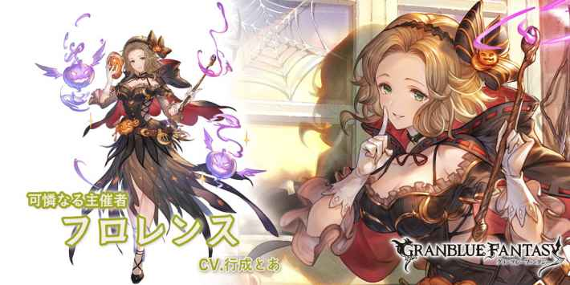

光フロレンス(ハロウィン)
基本資訊
| 定位 | 特殊 |
| 得意武器 | 杖 |
| 種族 | 人類 |
| CV | 行成とあ |
立繪
上限解放前
上限解放後
奧義
| 躍光遊戯陣 | |
| 4.5倍光屬性傷害 光屬性角色格擋效果(70%機率受到傷害-30%)×3T 自己極光の刻印+1 |
技能
CD:4 |
マスケラ |
| 光屬性角色單體攻擊+50%×1T └普攻上限+116萬/奧義上限+50萬 #選擇的角色HP-40% |
|
CD:12 |
ブルロ－ネ |
| 敵方全體 ・最大CT增加×180秒 ・攻擊-50%×6T ・DA-100%和TA-100%×6T ・命中率-50%×6T |
|
CD:12 |
カーザ・ディ・ファンターズミ |
| 光屬性角色單體 ・即奧 ・技能CD=0 #極光の刻印-5 |
被動技能
 |
祭典の導き手 |
| 光屬性角色隨著極光の刻印數量爆擊率上升 ・約5%×極光の刻印數(最大約25%)1.3倍傷害 #自己是後排也能發動 |
|
|
深謀嬉戯 |
| 回合結束時且我方有瀕死狀態時 ・我方全體暗屬性傷害-30%×2T |
武器